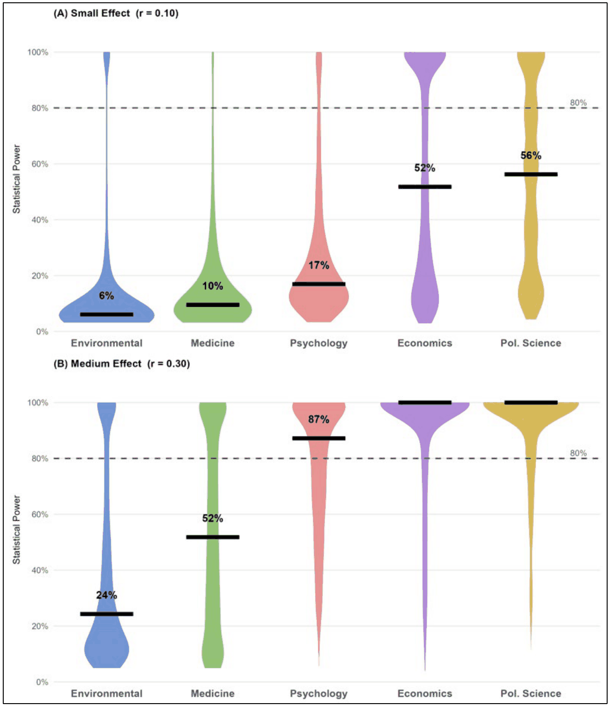
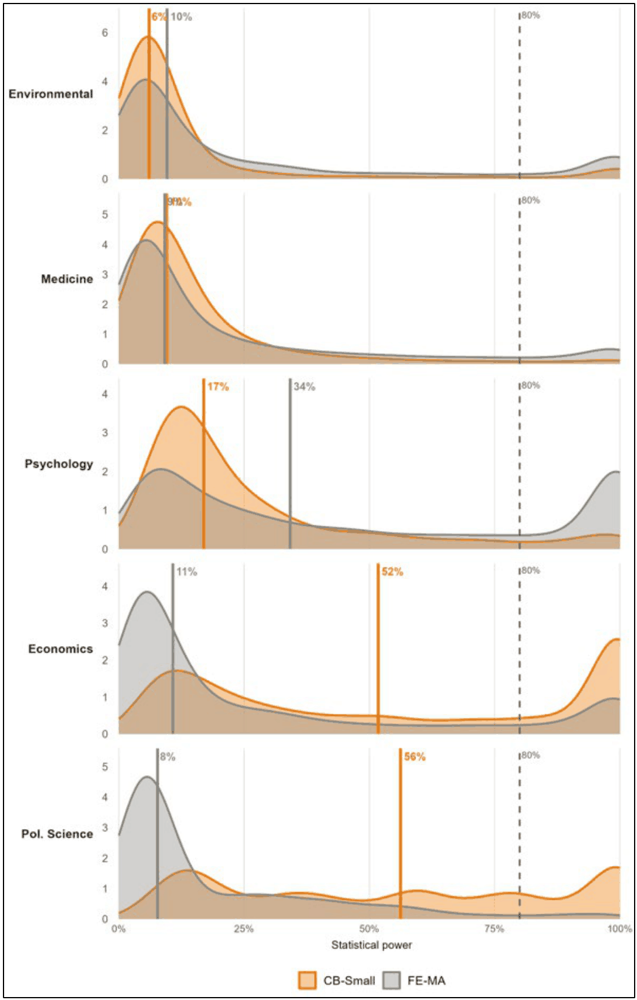
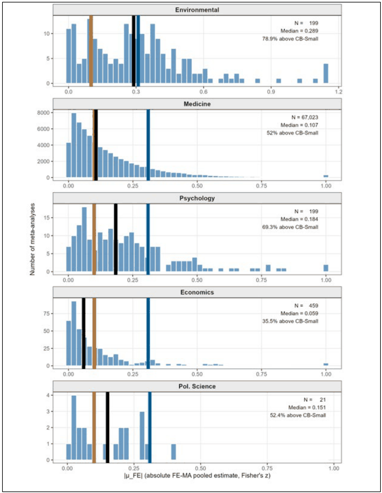
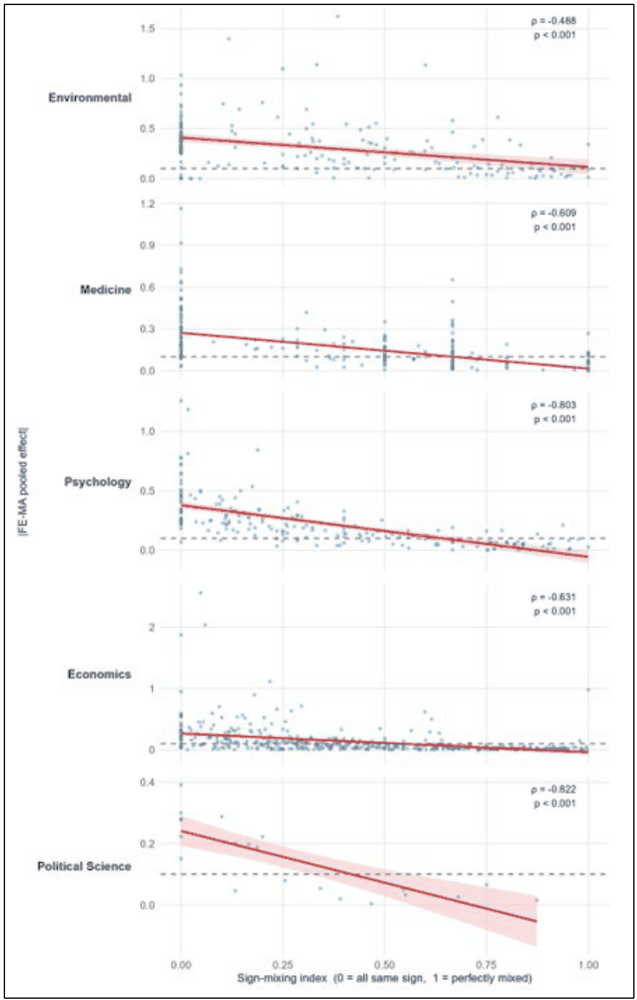
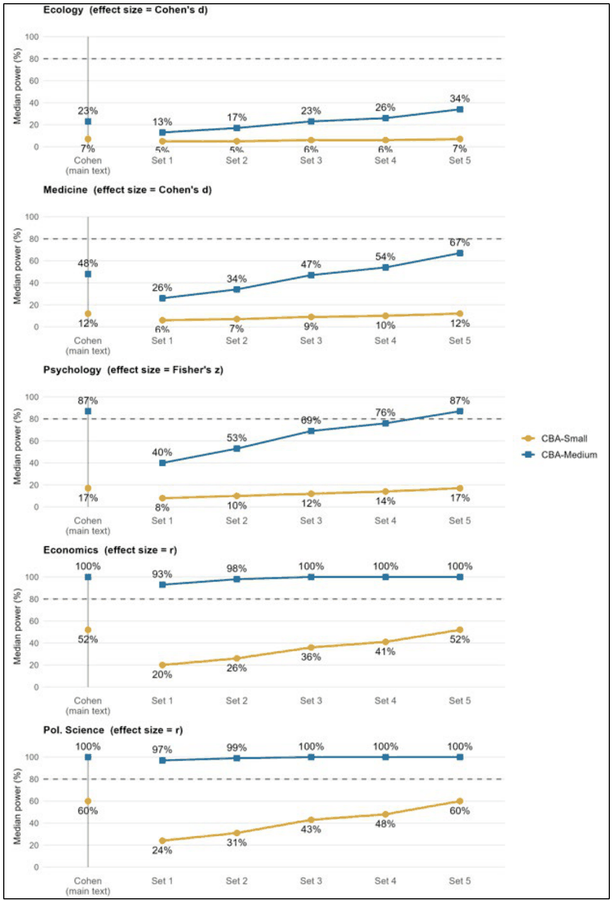
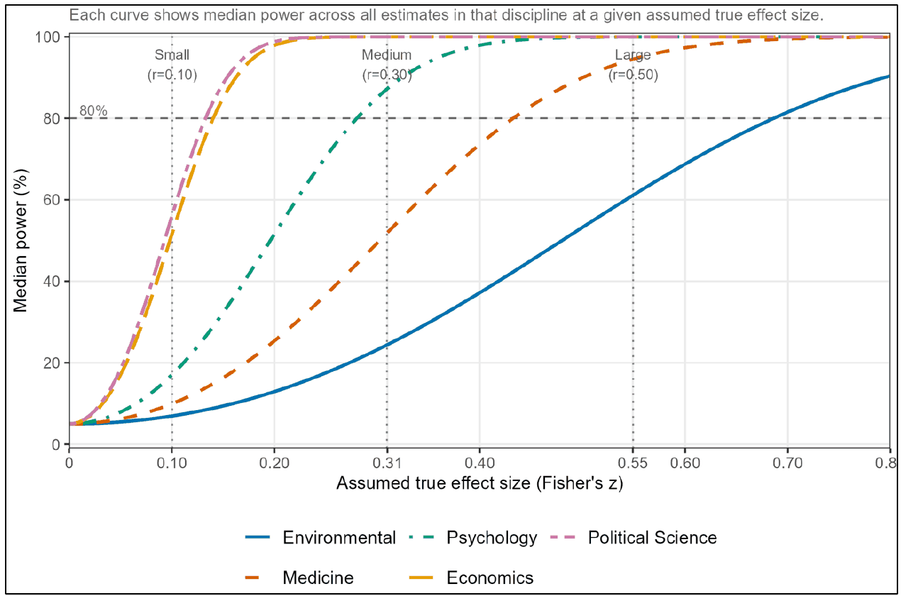

The Power of Science: Statistical Power in Published Research Across Five Disciplines
Yue Wang, Frantisek Bartos, Tom Coupe, Tomas Havranek, Sanghyun Hong, Zuzana Irsova, W. Robert Reed (2026), "The Power of Science: Statistical Power in Published Research Across Five Disciplines." University of Canterbury, Department of Economics and Finance, Working Paper No. 4/2026. https://repec.canterbury.ac.nz/cbt/econwp/2604.pdf. The text here is the working paper. The full text includes the SI Appendix printed in the same PDF. The main text prints no heading over its introduction; the one here exists so that the section can be linked, and the figure captions stay at the end of the main text, where the paper prints them. As printed, the main text cites references 39 and 40, which its reference list does not include, and the SI Appendix cites several works by numbers that differ from that list (Arel-Bundock et al. as 9, for example); both are kept as printed.
DEPARTMENT OF ECONOMICS AND FINANCE, SCHOOL OF BUSINESS AND ECONOMICS, UNIVERSITY OF CANTERBURY, CHRISTCHURCH, NEW ZEALAND
WORKING PAPER No. 4/2026
Department of Economics and Finance, UC Business School, University of Canterbury, Private Bag 4800, Christchurch, New Zealand
Yue Wang1, František Bartoš2, Tom Coupé1, Tomas Havranek3, Sanghyun Hong1, Zuzana Irsova3, W. Robert Reed1†
June 2026
Abstract
Statistical power, the probability that a study detects a true effect, is a key determinant of the reproducibility of published research. Prior studies have documented low power within individual disciplines, but these estimates are difficult to compare: they span different fields, use different effect-size measures, and apply different methods, leaving no coherent cross-disciplinary picture. We analyze statistical power across five disciplines, environmental science, economics, medicine, political science, and psychology, using approximately 748,000 estimates from large meta-analysis collections. Benchmarking each estimate against Cohen's conventional small and medium effect-size thresholds, we find that published research in the meta-analyzed literature is substantially underpowered for small effects in every discipline. Under the medium-effect benchmark, median power exceeds 80 percent in psychology, economics, and political science, but remains well below that threshold in environmental science and medicine. We compare this benchmark approach with the Fixed-Effects Meta-Analytic (FE-MA) approach used in prior work. The two align in environmental science and medicine, and partly in psychology, but diverge sharply in economics and political science. We argue that heterogeneity, sign-mixing, and publication selection can make the FE-MA pooled estimate an unreliable assumed true effect for the individual studies in a literature, whereas the conventional benchmark is transparent and comparable across fields. Because it offers a transparent and uniform basis for comparing power across fields, we recommend that benchmark power be reported routinely, with FE-MA treated as a complement. These findings link low power to replication failures and suggest that the severity of the replication crisis varies across disciplines.
Data availability statement: Data and code to reproduce the results in this paper are posted here: https://osf.io/h7qg3/.
JEL Categories: C12, C13, C18, C83
Acknowledgements: We acknowledge helpful comments from participants at the MAER-Net Colloquium, Ottawa, Canada in October, 2025. We especially thank Vincent Arel-Bundock for spotting an error in an earlier version of this manuscript.
1 Department of Economics and Finance & UCMeta, University of Canterbury, NEW ZEALAND
2 Faculty of Social and Behavioural Sciences, University of Amsterdam, NETHERLANDS
3 Institute of Economic Studies, Charles University, CZECH REPUBLIC and Meta-Research Innovation Center at Stanford (METRICS), Stanford University, USA
† Corresponding author: W. Robert Reed. Email: bob.reed@canterbury.ac.nz
INTRODUCTION
Scientific progress depends on results that replicate, yet accumulating evidence suggests that many published findings do not. Famously, the Open Science Collaboration (1) attempted to reproduce 100 psychology studies and succeeded in fewer than half. Similarly, Camerer et al. (2) reported substantial, albeit somewhat lower, failure rates for social science findings published in Nature and Science. More recent evidence reinforces this picture. In a large-scale replication effort spanning the social and behavioural sciences, Tyner et al. (3) find that only about half of tested claims replicate, with substantially attenuated effect sizes in replication studies. Miske et al. (4) show that even computational reproducibility, meaning rerunning the same code on the same data, is imperfect, while Brodeur et al. (5) document that many findings in economics and political science are sensitive to specification choices. Taken together, these results underscore concerns about the reliability of the published literature.
A leading explanation is low statistical power. Power is the probability that a study correctly detects an effect that truly exists; it rises with sample size and falls as the effect to be detected grows smaller. Cohen (6) proposed 80 percent as the conventional minimum for detecting medium-sized effects. In practice, however, empirical surveys find that many published effects fall below Cohen's medium threshold (7–9). When studies are underpowered, they generate false negatives by failing to detect real effects. But they also contribute to inflated effect size estimates among significant estimates since only the largest estimated effects clear the significance threshold (10, 11). The cumulative consequence is a published literature biased toward large, unreliable effects that are resistant to replication.
Table 1 summarizes a representative selection of studies from this literature. The headline finding is broadly consistent: median power falls well below the conventional 80 percent threshold wherever it has been measured, with estimates of 10 percent in political science (12), 18 percent in economics (13), and 11 percent (small effect)/42 percent (medium effect) in neuroscience (14). Yet the reported estimates span a striking range, from 10 percent to 71 percent across the studies in Table 1. The studies differ in their methods, their effect-size measures, and the benchmarks they use to define adequate power, making their headline figures difficult to compare directly. Even studies that use the same method (“FE-MA”) such as Ioannidis et al. (13) and Arel-Bundock et al. (12), calculate power differently, with the former calculating median over meta-analyses, and the latter calculating median over individual estimates.
| Study | Discipline | Headline Finding | Benchmark | Method |
|---|---|---|---|---|
| Arel-Bundock et al. (12) | Political Science | Median 10% | Field-specific FE-MA pooled estimate | FE-MA |
| Yang et al. (15) | Ecology and Evolutionary Biology | Median 15% (bias-corrected) and 23% (uncorrected); | Bias-corrected FE-MA pooled estimate | Multilevel FE-MA (bias-corrected for small-study and decline effects) |
| Ioannidis et al. (13) | Economics | Median 18% | Field-specific FE-MA pooled estimate | FE-MA |
| Barnes et al. (16) | Criminology | Median 71% | Field-specific FE-MA pooled estimate | FE-MA |
| Turner et al. (17) | Medicine | Median 13% | Clinically-defined threshold (30% relative risk reduction) | Clinical threshold |
| Szucs & Ioannidis (14) | Neuroscience | Median 11% (small), 42% (medium) | Cohen's conventions (small d = 0.20, medium d = 0.50) | CB |
| Sedlmeier & Gigerenzer (18) | Psychology | Median 14% (small), 44% (medium) | Cohen's conventions (small d = 0.20, medium d = 0.50) | CB |
NOTE: CB = Conventional Benchmark approach; uses Cohen's (6) conventional effect-size thresholds. FE-MA = Fixed-Effects Meta-Analytic approach; takes the inverse-variance-weighted pooled estimate as the assumed true effect within each meta-analysis, a choice of effect-size benchmark rather than a common-effect assumption. Arel-Bundock et al. (12) report power using unrestricted weighted least squares, whose point estimates coincide with fixed-effects pooling; we group both under FE-MA. All figures are median power. Not all power estimates are directly comparable across studies: FE-MA studies use a field-specific pooled estimate as the assumed true effect. Turner et al. (17) uses a clinically-defined threshold specific to Medicine. CB studies are comparable across disciplines but the thresholds are not universally accepted. The wide range of estimates (10–71%) partly reflects these methodological differences rather than true differences in the power of published research. Other studies reporting discipline-specific power estimates include Askarov et al. (19), Button et al. (10), Dumas-Mallet et al. (20), Fraley & Vazire (21), Jennions & Møller (22), and Stanley et al. (23).
Three specific deficiencies limit comparability. First, studies use different benchmarks for the assumed true effect: some adopt field-specific pooled estimates from meta-analyses, others use clinically defined thresholds, and others apply the conventional guidelines of Cohen (6). Second, the dominant Fixed-Effects Meta-Analytic (FE-MA) approach treats the fixed-effects pooled estimate within each meta-analysis as the true effect for all the estimates in that meta-analysis. This is useful when the pooled estimate provides a meaningful summary of the effects being studied, but it becomes problematic when a single pooled value must stand in as the assumed true effect for every estimate in a heterogeneous literature. When effects vary substantially in magnitude or sign, that single mean may be a poor representative value for the individual estimates to which it is applied. Third, most prior studies are confined to a single discipline, precluding systematic cross-disciplinary comparison.
Cohen's (6) widely used effect-size guidelines address all three deficiencies. Rather than estimating the true effect from the data, they assume the true effect equals one of Cohen's conventional thresholds. Power is then calculated for each individual estimate using its own standard error and degrees of freedom; no meta-analytic pooling is required. Because the same benchmarks are applied uniformly across disciplines, the resulting power estimates are directly comparable across fields. And because this approach does not rely on pooled estimates as assumed true effects, the publication-selection distortion and sign-mixing that complicate pooled-estimate (FE-MA) power calculations do not enter its benchmark, as we discuss below. However, Cohen’s thresholds have their own limitations: they are not universally accepted, and the choice of benchmark involves an element of judgement. We treat the small benchmark, r = 0.10, not as an estimate of any discipline's true effect but as a sensible default effect of interest, a deliberately modest lower bound on the effects that research across fields would typically want to be able to detect, without implying that smaller effects are unimportant in every field (6); CB-Small then asks whether published studies are adequately powered to detect effects at least this large. While prior work has used this approach, which we refer to as the Conventional Benchmark (CB) approach, no prior study has applied it simultaneously across five substantively distinct scientific disciplines spanning the natural, social, and clinical sciences.
We apply the CB approach to approximately 748,000 individual estimates drawn from five large collections of meta-analyses, the largest cross-disciplinary assessment of statistical power to date. Our analysis makes two contributions. Empirically, it provides the first unified and directly comparable picture of statistical power across these five disciplines. Methodologically, it shows that a single FE-MA pooled estimate is a fragile basis for cross-disciplinary comparison, because in heterogeneous literatures it can be a poor representative "true effect" for the individual estimates to which it is applied. In a literature with a small average effect, a near-zero absolute pooled mean and a substantial share of oppositely-signed estimates tend to occur together, an association we document directly; such a near-zero pooled value then implies near-zero power even for studies well powered at their own effects. By contrast, publication selection inflates the pooled estimate, as documented in prior work. The CB approach is exposed to neither issue, since its benchmark is fixed in advance rather than read off the published estimates. Its advantage is not that it estimates the true effect more accurately, but that by holding the assumed effect fixed across disciplines, it provides a transparent and consistent basis for comparison.
Our analysis uncovers underpowering in all five disciplines, although its severity varies by discipline and by the size of the benchmark effect. Median power to detect a small effect ranges from 6 percent in environmental science to 56 percent in political science. Under the medium-effect benchmark, the picture is more encouraging for psychology, economics, and political science, with each exceeding the 80 percent threshold. Environmental science and medicine, however, remain severely underpowered. CB and FE-MA estimates align relatively closely in environmental science, medicine, and, to a lesser extent, psychology. In contrast, the two approaches diverge sharply for economics and political science. As we show below, this divergence is driven not so much by differences in the size of the assumed effects, but rather by how the respective assumed effect sizes translate into noncentrality. Overall, these findings suggest that the severity of the replication crisis is not uniform across disciplines.
RESULTS
Figure 1 presents the full distribution of power estimates for each discipline under the CB approach, using both the small-effect (CB-Small) and medium-effect (CB-Medium) benchmarks. The top panel shows results for CB-Small (r = 0.10; Fisher's z ≈ 0.100). The ordering of the disciplines from lowest to highest power tracks typical sample sizes: median sample sizes are approximately 20 in environmental science, 45 in medicine, 103 in psychology, 402 in economics, and 448 in political science (SI Appendix, Table S1). This pattern follows directly from the mechanics of statistical power: when the benchmark effect size is held constant, disciplines with larger samples will exhibit higher median power.
Environmental science is the worst-powered discipline, with a median power of 6 percent, meaning that a typical environmental science study has only a 6 percent chance of detecting a small effect if one truly exists. Medicine and psychology are similarly poor, with median powers of 10 and 17 percent, respectively. Economics (median 52 percent) and political science (median 56 percent) perform substantially better, yet even these disciplines fall short: only 39 percent of economics estimates and 28 percent of political science estimates individually meet the 80 percent threshold. The distributions in the top panel of Figure 1 make clear that low-powered studies for small effects are common across every discipline examined.
The bottom panel of Figure 1 presents a considerably more encouraging picture for medium-sized effects (r = 0.30; Fisher's z ≈ 0.310). As expected, power increases across the board. Environmental science improves to a median of 24 percent and medicine to 52 percent, though both remain well below 80 percent. Psychology improves substantially to 87 percent. Economics and political science both reach median power of 100 percent.
Taken together, the two panels provide two informative reference points that bracket a range likely to contain the true power in each discipline, since typical effect sizes vary across and within literatures. They also demonstrate that there is substantial heterogeneity in power across the disciplines. This is further illustrated in Section S5 of the SI Appendix where power curves allow us to determine minimum detectable effects (the z-value associated with 80% power) for each of the five disciplines.
CB-Small and CB-Medium together bracket the likely range of true power across disciplines. Meta-analytic surveys consistently find that roughly two-thirds to three-quarters of published effects fall below Cohen's medium threshold (7–9), and FE-MA estimates fall closer to CB-Small than CB-Medium in every discipline (Figure 2). Taking these meta-analytic estimates at face value suggests that actual power lies closer to the CB-Small end, though, as we note below, the FE-MA estimates are subject to the limitations discussed below.

Figure 2 addresses the natural question of how CB results compare to what the prior FE-MA literature has found. Each row of Figure 2 represents one discipline, ordered worst-to-best-powered as in Figure 1, with three dots showing median power under CB-Small (orange), FE-MA (grey), and CB-Medium (blue), connected by a horizontal segment. The layout makes two patterns immediately visible. For environmental science, FE-MA (10%) and CB-Small (6%) are in the same general range, and for medicine the two are nearly identical: FE-MA (9%) and CB-Small (10%). For psychology, a gap opens up between the two (34% versus 17%). The gap becomes very large for economics and political science. In both cases, the FE-MA estimates lie far below the CB-Small estimates: 11% versus 52% in economics, and 8% versus 56% in political science.

Under the CB approach, power rises with sample size because larger samples reduce standard errors, thereby increasing the noncentrality parameter — the ratio of the assumed true effect to the standard error in absolute value— which ultimately governs the probability of detection. Sample size, however, cannot explain why CB and FE-MA diverge within economics and political science: both approaches use identical standard errors for every estimate, so any sample size effect operates equally on both. What distinguishes them is therefore not the standard errors, which are common to both approaches, nor even the marginal distribution of assumed effects, but how each assumed effect is paired with the standard error of the individual estimate to which it applies.
One might expect the divergence to reflect simply that FE-MA pooled effects are smaller than Cohen's small benchmark. If pooled effects in economics and political science typically fall below r = 0.10, lower FE-MA power would follow mechanically. The data offer partial support for this account in economics: the median absolute FE-MA pooled effect there is r = 0.059, below the CB-Small threshold of r = 0.10, and most economics meta-analyses have pooled effects below that threshold (SI Appendix, Figure S1).
But the explanation fails for political science. There, the median absolute FE-MA pooled effect is r = 0.151, above the CB-Small threshold of r = 0.10, yet FE-MA median power is only 8 percent, well below the CB-Small median of 56 percent. If pooled effect sizes drove power, political science FE-MA should comfortably exceed CB-Small; instead it falls far below it. The explanation lies less in the size of the pooled effects themselves than in how those effects translate into noncentrality across the individual estimates within each meta-analysis. Even when the median pooled effect is relatively large, FE-MA noncentrality, and therefore FE-MA power, can remain low if individual estimates are imprecise. In political science both mechanisms contribute: larger pooled effects tend to be paired with less precise estimates (SI Appendix, Table S6), and many estimates sit in heavily sign-mixed meta-analyses whose pooled effects are pulled toward zero (SI Appendix, Table S5). Differences in effect size are therefore only a partial explanation for the CB-FE-MA divergence. Figure 3 provides the fuller picture.
Figure 3 reports the distributions of power using both the FE-MA pooled effects and the CB-Small benchmark effects. By displaying the full distribution of individual-estimate power under each approach, the figure shows how different assumptions about the true effect translate into differences in noncentrality across disciplines. Each panel overlays the distribution of individual-estimate power under CB-Small, shown in orange, and FE-MA, shown in grey, with vertical lines marking the median for each method. In environmental science and medicine, the two distributions broadly track one another, consistent with the pattern shown in Figure 2.
In psychology, the median FE-MA pooled effect (0.184; SI Appendix, Table S3) exceeds the CB-Small benchmark (0.10), shifting the FE-MA noncentrality distribution to the right of CB-Small, consistent with the pattern shown in Figure 2. In economics, the median FE-MA pooled effect (0.059) is below the CB-Small benchmark (0.10), consistent with the direction of the divergence, though the difference in effect sizes alone does not account for the much larger gap in median power (11% versus 52%). Political science is the more counterintuitive case: its median FE-MA pooled effect (0.151) actually exceeds CB-Small, yet FE-MA median power (8%) falls well below CB-Small median power (56%). Figure 3 highlights that CB and FE-MA can diverge substantially, and that the direction and magnitude of divergence depend on features of each literature that are difficult to predict or diagnose in advance.
A further observation from Figure 3 is worth noting. If researchers routinely set sample sizes through formal power calculations targeting the conventional 80 percent threshold, one would expect the FE-MA power distribution to be concentrated near 80 percent, since FE-MA uses the discipline-specific effects that researchers were presumably planning around. No discipline shows this pattern. The closest is psychology, where the FE-MA power distribution is bimodal. We do not interpret this as evidence of power planning: a bimodal distribution is consistent with several explanations, including a mixture of experimental and observational studies, heterogeneity in typical sample sizes across subfields, or a subset of formally powered studies. In every other discipline, FE-MA distributions are heavily skewed toward low power, as are the CB-Small distributions. This is consistent with sample sizes being driven primarily by practical constraints, including data availability, recruitment costs, field conditions, and disciplinary convention, rather than by deliberate power planning calibrated to expected effect sizes. The pairing of effects with precision that drives FE-MA power therefore reflects these practical constraints rather than a meaningful structural feature of each field, a further reason not to read FE-MA power as an authoritative summary of a discipline's true power.

DISCUSSION
Three main findings emerge from our analysis. First, published research in the meta-analyzed literature is substantially underpowered for small effects across all five disciplines examined. For medium-sized effects the situation is more encouraging, with psychology, economics, and political science each exceeding the conventional 80 percent threshold, reflecting their larger typical sample sizes. Second, power differs substantially across disciplines. The minimum detectable effects reported in Section S5 of the SI Appendix make this concrete. In environmental science, where median sample sizes are approximately 20, 80% median power requires an effect of at least r = 0.60, well above Cohen's large-effect threshold, while in economics and political science, where median sample sizes exceed 400, the corresponding threshold falls to approximately r = 0.14.
Third, CB and FE-MA estimates align closely for environmental science and medicine, and to a lesser extent for psychology, but diverge sharply for economics and political science. This divergence is not simply explained by FE-MA pooled effects being smaller than Cohen's benchmarks. What matters for power is not the assumed effect size alone but how it pairs with the standard error of each individual estimate. In economics and political science these pairings differ markedly between the two approaches, a pattern Figure 3 illustrates in detail.
When CB and FE-MA power estimates diverge, the natural question is which to prefer. FE-MA has one genuine advantage: rather than imposing an external benchmark, it draws on each literature's own data to characterize the prevailing effect size. But the weaknesses on the two sides are not symmetric with this strength. CB's main limitation is one of interpretation, in that its benchmarks are not discipline-specific, whereas FE-MA's limitations bear on whether a single pooled estimate can serve as a representative assumed effect for the individual estimates in a heterogeneous meta-analysis. With the exception of medicine, homogeneity is rejected in the great majority of meta-analyses, and median I² values are high wherever they can be computed (SI Appendix, Table S1): about 77 percent in psychology, 79 percent in environmental science, and 86 to 96 percent in economics, while in political science I² cannot be computed cleanly because of the dataset structure, though the limited article-level evidence likewise indicates high heterogeneity, making the fixed-effects pooled estimate a questionable basis for power calculations.
Beyond this, two further features of the pooled estimate bear on its reliability as a power benchmark. First, sign-mixing. When the estimates in a meta-analysis include both positive and negative signs, the absolute pooled mean is correspondingly small; whatever its source, such a near-zero value, applied as the assumed true effect for every study, yields near-zero power even for studies that may be individually well-powered at their own effects. We find strong evidence of this association across all five disciplines: the correlation between the degree of sign-mixing within a meta-analysis and the absolute value of its pooled FE-MA effect is negative and highly significant in every discipline (Spearman ρ ranging from −0.49 to −0.82, all p < 0.001; SI Appendix, Table S5 and Figure S2). Second, publication selection inflates the pooled estimate, as documented in prior work. Both forces may be present to varying degrees in any empirical literature. Because they operate simultaneously and in opposite directions, neither the direction nor the magnitude of the net bias in a FE-MA power estimate can be determined. Thus, there is reason to be sceptical that FE-MA pooled effects provide reliable, discipline-specific representative values for power calculations in heterogeneous and sign-varying literatures.
The reliability of the FE-MA pooled estimate as a power benchmark is also questioned within the meta-analytic literature itself. Accordingly, a range of bias-correction and small-sample estimators has been developed to address selection, small-study, and related biases in the pooled estimate, including the weighted average of the adequately powered (13), unrestricted weighted least squares (36), PET-PEESE (39), the degrees-of-freedom-adjusted UWLS+3 for correlations (40), and MAIVE (34).
On the other hand, the CB approach uses arbitrary thresholds and applies a one-size-fits-all approach where an identical threshold value is assumed to be equally meaningful in all disciplines. While we cannot address the latter concern, we re-ran the analysis under five alternative threshold sets based on published meta-analytic surveys of effect sizes across disciplines, including Doucouliagos (7), Gignac & Szodorai (24), Funder & Ozer (25), Lovakov & Agadullina (26), and Bosco et al. (27). The results, reported in SI Appendix, Section S4, are broadly robust to these alternatives. Both approaches have limitations, but limitations of different kinds and different severity. CB's benchmarks are admittedly generic, yet transparent, fixed in advance, and comparable across disciplines; FE-MA's pooled estimate is discipline-specific, yet its validity as a per-estimate true effect is undermined by pervasive heterogeneity, sign-mixing, and publication bias acting in indeterminate directions. We therefore recommend that CB power, and CB-Small in particular (which provides a reasonable and conservative benchmark for the modest effects typical of empirical research), be reported routinely, with FE-MA reported as an alternative or complement for readers who still find it informative.
Two limitations should be acknowledged. First, our meta-analysis collections are not random samples of the published literature in each discipline. Studies that attract meta-analyses may differ systematically from the broader literature in effect size, sample size, or methodological characteristics, and our estimates should be interpreted as characterizing the meta-analyzed literature rather than the full discipline. Second, our analysis focuses on just two approaches to estimating statistical power (CB and FE-MA) that evaluate power at a specified assumed effect size. Other noncentrality-based approaches, including z-curve (28) and the srn-curve (29), instead estimate the distribution of power from observed test statistics under different sets of assumptions.
These findings bear directly on the replication crisis. Vu (30) shows analytically that insufficient statistical power alone can fully account for the observed replication rates in experimental economics and social science, and can explain approximately two-thirds of the replication gap in psychology. Our results lend empirical force to that argument. For small effects, fewer than one study in five in environmental science, medicine, or psychology meets the 80 percent power threshold, and a majority fall short even in economics and political science. At medium effect sizes, however, the situation is considerably more encouraging for three disciplines: psychology, economics, and political science each exceed the 80 percent threshold. We emphasise that high power against a fixed benchmark reflects the precision of published studies, not whether their reported effects are free of selection bias. The publication selection documented for several of these literatures (for example, 13, 12, 31) is a separate and serious concern, and our CB figures should not be read as implying that the underlying published effects are unbiased. Because publication selection inflates the pooled estimate, pooled-estimate power is, if anything, an over-rather than under-estimate; our higher CB figures should therefore not be read as overturning the lower FE-MA power reported in that prior work. These findings suggest that the severity of the replication crisis is not uniform: disciplines where true effects are predominantly small and typical sample sizes are modest face a more severe reproducibility challenge than those where moderate effects are common or samples are large.
MATERIALS AND METHODS
We analyze five large-scale collections of meta-analyses spanning environmental science, economics, medicine, political science, and psychology, comprising approximately 748,000 individual statistical estimates. The environmental science data derive from Bartoš et al. (31) as originally sourced from Deressa et al. (32). They consist of 12,102 estimates across 199 meta-analyses with effects measured as Fisher's z. The economics data draw on two sources that differ in scope and coverage but are combined for analysis: Wang's (33) elasticity collection, comprising 16,971 estimates from 18 meta-analyses, and a regression-coefficient collection that overlaps with and extends the economics meta-analysis databases used in Ioannidis et al. (13), Bartoš et al. (31), and Irsova et al. (34), comprising 157,781 estimates from 441 meta-analyses. Together, these sources yield a combined economics sample of 174,752 estimates from 459 meta-analyses. Descriptive statistics for the two sources are reported separately in SI Appendix, Table S1. The medicine data are taken from Bartoš et al. (31) and include 543,009 estimates across 67,023 meta-analyses taken from the Cochrane Database of Systematic Reviews, with effects measured as Fisher's z. This is by far the largest single-discipline component of our dataset. The political science data derive from Arel-Bundock et al. (12); we use the Doucouliagos sub-sample, comprising 6,295 estimates across 21 meta-analyses identified by question_id, the within-article meta-analysis identifier used in that study. Finally, the psychology data also derive from Bartoš et al. (31) and were originally sourced from Sladekova (35). They consist of 11,622 estimates across 199 meta-analyses with effects measured as Fisher’s z. All datasets underwent cleaning prior to analysis, including removal of duplicate estimates and exclusion of estimates with undefined standard errors or insufficient degrees of freedom; full details are provided in the SI Appendix and the data cleaning log deposited with the replication package.
Two effect size pipelines are used across the five disciplines. For economics and political science, raw regression coefficients are transformed to partial correlation coefficients (PCC, equivalent to Pearson's r) via , where t = BETA/SE and df = n − 3; the resulting PCC is then converted to Fisher's z via z = atanh(r), with standard error . For environmental science, medicine, and psychology, Fisher's z is provided directly by the source datasets. These transformations place all five disciplines on a common variance-stabilized scale for the CB power calculation.
The Conventional Benchmark (CB) approach assigns each individual estimate an assumed true effect based on a conventional benchmark, such as small, medium, or large, drawn from Cohen's (6) guidelines and adapted to the effect size metric. Power is then calculated for each estimate using that estimate's own standard error and degrees of freedom; no meta-analytic pooling is required, and no assumption is made about the distribution of true effects across studies. Since all five disciplines are on the Fisher's z scale, power is computed via the standard normal approximation: power = , where μ is the benchmark in Fisher’s z units. All calculations use a two-sided test at α = 0.05.
CB size thresholds follow Cohen (6). For PCC/r: small = 0.10, medium = 0.30, large = 0.50. For Fisher's z: small = atanh(0.10) ≈ 0.100, medium = atanh(0.30) ≈ 0.310, large = atanh(0.50) ≈ 0.549. In the main text, we report CB-Small (small benchmark) and CB-Medium (medium benchmark); CB-Large results are reported in the SI Appendix (Section S2). We also report the share of estimates meeting the 80 percent power threshold under CB-Small as a complement to the median.
To examine how CB results relate to the field-specific effect sizes used in prior power studies, we also compute power using the Fixed-Effects Meta-Analytic Approach (FE-MA). Within each meta-analysis, a fixed-effects pooled estimate is computed using inverse-variance weights (see also (40) on degrees-of-freedom-adjusted estimators for the meta-analysis of correlations). This pooled estimate serves as the assumed true effect, and power is calculated for each individual estimate by the same methods as the CB. Because the unrestricted weighted least squares estimator used by Arel-Bundock et al. (12) yields the same point estimate as fixed-effects pooling, the retrospective power computed under the two estimators is identical; the FE-MA power figures reported here therefore do not depend on this modelling choice. We benchmark against the fixed-effects pooled estimate because it is the estimator used by the prior power studies we compare with (12, 13). Three summary statistics are reported for each discipline and approach: mean power, median power, and the share of estimates with power ≥ 80 percent. Median power is the preferred summary given the highly skewed distribution of power estimates within each discipline. The 80 percent threshold follows Cohen (6).
All analyses are implemented in R. Power for all disciplines uses the standard normal approximation (pnorm()). Fixed-effects pooling uses the metafor package (Viechtbauer (37)). Figures are produced with ggplot2 (38) and patchwork. Code is available at https://osf.io/h7qg3; data will be deposited upon publication.
REFERENCES
- Open Science Collaboration, Estimating the reproducibility of psychological science. Science 349, aac4716 (2015).
- C. F. Camerer, et al., Evaluating the replicability of social science experiments in Nature and Science between 2010 and 2015. Nat. Hum. Behav. 2, 637–644 (2018).
- A. H. Tyner, et al., Investigating the replicability of the social and behavioural sciences. Nature 652, 143–150 (2026).
- O. Miske, et al., Investigating the reproducibility of the social and behavioural sciences. Nature 652, 126–134 (2026).
- A. Brodeur, et al., Reproducibility and robustness of economics and political science research. Nature 652, 151–156 (2026).
- J. Cohen, Statistical Power Analysis for the Behavioral Sciences, 2nd Ed. (Lawrence Erlbaum Associates, 1988).
- H. Doucouliagos, “How large is large? Preliminary and relative guidelines for interpreting partial correlations in economics. Deakin University, Department of Economics.” (Deakin University, 2011).
- J. F. Hemphill, Interpreting the magnitudes of correlation coefficients. Am. Psychol. 58, 78–79 (2003).
- M. A. Kraft, Interpreting Effect Sizes of Education Interventions. Educ. Res. 49, 241–253 (2020).
- K. S. Button, et al., Power failure: why small sample size undermines the reliability of neuroscience. Nat. Rev. Neurosci. 14, 365–376 (2013).
- J. P. A. Ioannidis, Why Most Discovered True Associations Are Inflated. Epidemiology 19, 640 (2008).
- V. Arel-Bundock, R. C. Briggs, H. Doucouliagos, M. M. Aviña, T. D. Stanley, Quantitative Political Science Research Is Greatly Underpowered. J. Polit. 88, 36–46 (2026).
- J. P. A. Ioannidis, T. D. Stanley, H. Doucouliagos, The Power of Bias in Economics Research. Econ. J. 127, F236–F265 (2017).
- D. Szucs, J. P. A. Ioannidis, Correction: Empirical assessment of published effect sizes and power in the recent cognitive neuroscience and psychology literature. PLOS Biol. 19, e3001151 (2021).
- Y. Yang, et al., Publication bias impacts on effect size, statistical power, and magnitude (Type M) and sign (Type S) errors in ecology and evolutionary biology. BMC Biol. 21, 71 (2023).
- J. C. Barnes, M. F. TenEyck, T. C. Pratt, F. T. Cullen, How Powerful is the Evidence in Criminology? On Whether We Should Fear a Coming Crisis of Confidence. Justice Q. 37, 383–409 (2020).
- R. M. Turner, S. M. Bird, J. P. T. Higgins, The Impact of Study Size on Meta-analyses: Examination of Underpowered Studies in Cochrane Reviews. PLOS ONE 8, e59202 (2013).
- P. Sedlmeier, G. Gigerenzer, “Do studies of statistical power have an effect on the power of studies?” in Methodological Issues & Strategies in Clinical Research., A. E. Kazdin, Ed. (American Psychological Association, 1992), pp. 389–406.
- Z. Askarov, A. Doucouliagos, H. Doucouliagos, T. D. Stanley, The Significance of Data-Sharing Policy. J. Eur. Econ. Assoc. 21, 1191–1226 (2023).
- E. Dumas-Mallet, K. S. Button, T. Boraud, F. Gonon, M. R. Munafò, Low statistical power in biomedical science: a review of three human research domains. R. Soc. Open Sci. 4, 160254 (2017).
- R. C. Fraley, S. Vazire, The N-Pact Factor: Evaluating the Quality of Empirical Journals with Respect to Sample Size and Statistical Power. PLOS ONE 9, e109019 (2014).
- M. D. Jennions, A. P. Møller, A survey of the statistical power of research in behavioral ecology and animal behavior. Behav. Ecol. 14, 438–445 (2003).
- T. D. Stanley, E. C. Carter, H. Doucouliagos, What meta-analyses reveal about the replicability of psychological research. Psychol. Bull. 144, 1325–1346 (2018).
- G. E. Gignac, E. T. Szodorai, Effect size guidelines for individual differences researchers. Personal. Individ. Differ. 102, 74–78 (2016).
- D. C. Funder, D. J. Ozer, Evaluating Effect Size in Psychological Research: Sense and Nonsense. Adv. Methods Pract. Psychol. Sci. 2, 156–168 (2019).
- A. Lovakov, E. R. Agadullina, Empirically derived guidelines for effect size interpretation in social psychology. Eur. J. Soc. Psychol. 51, 485–504 (2021).
- F. A. Bosco, H. Aguinis, K. Singh, J. G. Field, C. A. Pierce, Correlational effect size benchmarks. J. Appl. Psychol. 100, 431–449 (2015).
- F. Bartoš, U. Schimmack, Z-curve 2.0: Estimating Replication Rates and Discovery Rates. Meta-Psychol. 6 (2022).
- E. van Zwet, S. Schwab, S. Senn, The statistical properties of RCTs and a proposal for shrinkage. Stat. Med. 40, 6107–6117 (2021).
- P. Vu, Why are replication rates so low? J. Econom. 245, 105868 (2024).
- F. Bartoš, et al., Footprint of publication selection bias on meta-analyses in medicine, environmental sciences, psychology, and economics. Res. Synth. Methods 15, 500–511 (2024).
- T. Deressa, et al., More Than Half of Statistically Significant Research Findings in the Environmental Sciences are Actually Not. [Preprint] (2023). Available at: https://ecoevorxiv.org/repository/view/4966/ [Accessed 14 June 2026].
- Y. Wang, “The Consequences of Methodological Choices for Research Findings: Applications from Economics and Other Disciplines,” University of Canterbury, Christchurch, New Zealand. (2026).
- Z. Irsova, P. R. D. Bom, T. Havranek, H. Rachinger, Spurious precision in meta-analysis of observational research. Nat. Commun. 16, 8454 (2025).
- M. Sladekova, L. E. A. Webb, A. P. Field, Estimating the change in meta-analytic effect size estimates after the application of publication bias adjustment methods. Psychol. Methods 28, 664–686 (2023).
- T. D. Stanley, et al., Unrestricted weighted least squares represent medical research better than random effects in 67,308 Cochrane meta-analyses. J. Clin. Epidemiol. 157, 53–58 (2023).
- W. Viechtbauer, Conducting meta-analyses in R with the metafor package. J. Stat. Softw. 36, 1–48 (2010).
- H. Wickham, ggplot2 (Springer International Publishing, 2016).
FIGURE CAPTIONS
Figure 1. Statistical power of published research across five scientific disciplines, estimated using the Conventional Benchmark (CB) approach. Panel A (top): CB-Small benchmark (r = 0.10; Fisher’s z = atanh(0.10) ≈ 0.100 for all five disciplines). Panel B (bottom): CB-Medium benchmark (r = 0.30; Fisher’s z = atanh(0.30) ≈ 0.310 for all five disciplines). Disciplines are ordered from worst to best powered (left to right) by median power under CB-Small. Violins are trimmed to the range of the data and scaled to equal area. Horizontal bars indicate median power; values are annotated. Dashed line shows the conventional 80 percent power threshold. Note that economics and political science violins are narrow in Panel B because power is highly concentrated near 100 percent in those disciplines for medium effects.
Figure 2. Median statistical power by discipline and approach. Rows are ordered from worst-powered at the top to best-powered at the bottom, based on CB-Small median power. Dots show median power under three approaches: CB-Small (orange), FE-MA (grey), and CB-Medium (blue), with a horizontal segment connecting the full range of values in each row. The dashed vertical line marks the conventional 80% adequacy threshold. In environmental science, FE-MA (10%) falls between CB-Small (6%) and CB-Medium (24%). In medicine, FE-MA (9%) and CB-Small (10%) are nearly identical. In psychology, FE-MA (34%) falls between CB-Small (17%) and CB-Medium (87%). Across these three disciplines, both approaches agree that published research is substantially underpowered. In economics and political science, FE-MA falls well below CB-Small, reflecting a divergence in the assumed true effects used by the two approaches, discussed in the Discussion and SI Appendix. Because the two approaches evaluate power against different assumed effects (a common external benchmark versus each literature's own pooled estimate), the rows are not a like-for-like contest; where the figures coincide or differ reflects both the assumed effect sizes and how those effects pair with the standard errors of the individual estimates.
Figure 3. Statistical power distributions by discipline: CB-Small versus FE-MA. Each panel overlays kernel density estimates of individual-estimate power under CB-Small (orange) and FE-MA (grey). Vertical lines mark medians, annotated above each line. The dashed vertical line marks the 80 percent power threshold. FE-MA medians are computed at the estimate level, consistent with Figure 2. Medicine density is estimated from a random sample of 50,000 estimates; medians are computed on all 543,009 cleaned medicine estimates.
SI Appendix
The Power of Science: Statistical Power in Published Research Across Five Disciplines
Yue Wang · František Bartoš · Tom Coupé · Tomáš Havránek
Sanghyun Hong · Zuzana Irsová · W. Robert Reed
Contents:
- Section S1. Descriptive Statistics
- Section S2. CB-Large Results
- Section S3. What Explains the Divergence between FE-MA and CB?
- Section S4. Robustness Check: Alternative Effect Size Threshold Sets
- Section S5. Power Curves and Minimum Detectable Effects
Corresponding author: W. Robert Reed, University of Canterbury, bob.reed@canterbury.ac.nz
Section S1. Descriptive Statistics
Understanding the structure of the underlying data is essential for interpreting both the level and the cross-disciplinary variation in estimated power reported in the main text. Table S1 presents distributional statistics for the datasets underlying our analysis, with economics split into its two source datasets (Wang and Irsova). For each panel we report the mean, standard deviation, and quartile distribution of both the signed and absolute values of the effect size (Pearson's r), the absolute standardised test statistic (|t| or |z|), the distribution of I² across meta-analyses, and the distribution of estimate counts per meta-analysis.
Several features of Table S1 are directly relevant to interpreting the main results. First, sample sizes per estimate vary substantially across disciplines and map closely onto the cross-disciplinary pattern in CB power. Median sample size per estimate is 20 in environmental science, 45 in medicine, and 103 in psychology, the three disciplines with the lowest CB power in Figure 1. By comparison, median sample size is 142 in economics using Wang, 433 in economics using Irsova, and 448 in political science, the two disciplines with the highest CB power. Because CB power depends entirely on per-estimate precision, this variation in sample size is the driver of the discipline-level heterogeneity documented in Figure 1. The relationship is most clearly visible under CB-Small, where all five disciplines remain well below 100% and the cross-disciplinary gradient is fully resolved; under CB-Medium, economics and political science both reach 100% median power, compressing the observable variation among the higher-powered disciplines.
Second, the typical absolute, estimated effect size is small to medium across all five disciplines, and is smallest in economics and political science. Median |r| is 0.080 in Irsova and 0.149 in Wang (economics), and 0.081 in political science, compared with 0.171 in medicine, 0.314 in environmental science, and 0.202 in psychology.
A related but distinct feature of Table S1 is the gap between the median signed r and the median |r|. When estimates within a literature are directionally homogeneous, with the percentage positive close to 0 or 1, the two statistics should be similar, since most estimates contribute the same sign. When estimates are sign-mixed, with the percentage positive near 0.5, positive and negative values partially cancel in the signed distribution. This drives the median signed r toward zero while leaving the median |r| unaffected.
Psychology illustrates the first case: with 80.2% of estimates positive, the median signed r (0.182) and the median |r| (0.202) are nearly identical. Environmental science, economics, medicine, and political science illustrate the second: median |r| values are 0.314, 0.080–0.149, 0.171, and 0.081 respectively, while the corresponding signed medians are substantially smaller (0.201, 0.017–0.065, 0.124, and 0.026), consistent with 72.1%, 60.1–69.0%, 74.6%, and 61.9% of estimates being positive. This phenomenon, sign-mixing within meta-analyses, and its implications for interpreting power estimates are discussed in detail in Section S3.
Third, the distribution of absolute standardised test statistics (|t/z|) is informative about the relationship between statistical significance and power. Median |t/z| ranges from 1.0 in medicine and 1.6 in environmental science to roughly 1.9–2.3 in economics, political science, and psychology. Values clustering near 2 indicate that a large share of published estimates are only just statistically significant at conventional thresholds, a pattern consistent with p-hacking and publication bias.
Fourth, the distribution of estimates per meta-analysis varies dramatically across disciplines and bears on the interpretation of discipline-level power summaries. At one extreme, economics-Wang has a median of 430 estimates per meta-analysis. At the other extreme, the 67,023 meta-analyses in the medicine dataset have a median of just 5. This means that in medicine, estimate-level and meta-analysis-level power summaries are very similar, since the small number of estimates per meta-analysis prevents any single meta-analysis from dominating the aggregate. In economics and political science, by contrast, large meta-analyses contribute many more estimates to the estimate-level distribution, which is why estimate-level medians and median-of-medians can diverge noticeably for those disciplines. Figure 2 in the text reports the median computed across all individual estimates, which weights each estimate equally regardless of meta-analysis size.
Fifth, the I² statistics reveal pervasive between-study heterogeneity across disciplines. In environmental science, economics (Wang) and economics (Irsova), median I² is 79.3%, 96.1%, and 85.8% respectively, indicating that the vast majority of variance in effect estimates within meta-analyses reflects genuine heterogeneity rather than sampling error. Psychology and medicine show median I² values of 76.9% and 17.5% (the latter computed only for the 37,815 of 67,023 medicine meta-analyses with at least five estimates). For political science, I² cannot be computed cleanly at any level of aggregation due to the structure of the Arel-Bundock et al. (9) dataset, in which all estimates within a research question share the same sample size. However, among the 3 multi-question articles for which article-level I² is feasible, the median value is 99.8%.
Formal tests of homogeneity corroborate the I² findings. The null hypothesis of a common true effect within meta-analyses is rejected at the 5% level for the vast majority of meta-analyses in economics (100.0% (Wang) and 96.6% (Irsova)), psychology (85.9%), and environmental science (81.9%). As noted above, for political science, the Q-test for homogeneity likewise cannot be computed meaningfully at any level of aggregation due to the structure of the Arel-Bundock et al. (9) dataset. In the three cases where it can be calculated, homogeneity is rejected in every case, consistent with a median I² of 99.8%. Medicine is the exception, with a rejection rate of 31.9% (computed, as noted above, for the 37,815 meta-analyses with at least five estimates). This lower figure likely reflects two factors operating in the same direction: the Q-test is known to have low power when the number of primary studies per meta-analysis is small, and the medicine dataset contains many meta-analyses near the k ≥ 5 threshold; and medicine's median I² of 17.5% is itself substantially lower than for the other four disciplines, suggesting genuinely less between-study heterogeneity.
Taken together, the Q-test results and I² statistics paint a consistent picture: within-meta-analysis homogeneity is the exception rather than the rule across published research. This pervasive heterogeneity is directly relevant to the validity of the FE-MA approach: the fixed-effects pooled estimate is an appropriate assumed true effect only when studies within a meta-analysis share a common true effect, an assumption that high I² renders implausible in most cases.
| Variable | Mean | SD | Q1 | Median | Q3 |
|---|---|---|---|---|---|
| ENVIRONMENTAL | |||||
| # meta-analyses = 199; # estimates = 12,102; share positive = 72.1%; homogeneity rejected = 81.9%; I² based on 199 of 199 MAs with k ≥ 2 | |||||
| r (signed) | 0.200 | 0.430 | -0.033 | 0.201 | 0.490 |
| |r| | 0.378 | 0.286 | 0.134 | 0.314 | 0.586 |
| |t/z| | 2.767 | 3.587 | 0.642 | 1.575 | 3.204 |
| I² (%) | 68.5 | 29.5 | 54.1 | 79.3 | 91.5 |
| Estimates per meta-analysis | 61 | 108 | 11 | 26 | 56 |
| n (sample size) | 17,975,160 | 813,992,371 | 9 | 20 | 55 |
| ECONOMICS (Wang) | |||||
| # meta-analyses = 18; # estimates = 16,971; share positive = 69.0%; homogeneity rejected = 100.0%; I² based on 18 of 18 MAs with k ≥ 2 | |||||
| r (signed) | 0.177 | 0.349 | -0.021 | 0.065 | 0.344 |
| |r| | 0.266 | 0.287 | 0.046 | 0.149 | 0.386 |
| |t/z| | 4.440 | 7.739 | 1.042 | 2.275 | 4.538 |
| I² (%) | 91.4 | 10.7 | 86.9 | 96.1 | 98.6 |
| Estimates per meta-analysis | 943 | 1,093 | 208 | 430 | 1,324 |
| n (sample size) | 8,978 | 87,784 | 55 | 142 | 816 |
| ECONOMICS (Irsova) | |||||
| # meta-analyses = 441; # estimates = 157,781; share positive = 60.1%; homogeneity rejected = 96.6%; I² based on 441 of 441 MAs with k ≥ 2 | |||||
| r (signed) | 0.056 | 0.246 | -0.041 | 0.017 | 0.122 |
| |r| | 0.157 | 0.198 | 0.025 | 0.080 | 0.204 |
| |t/z| | 3.435 | 9.895 | 0.885 | 1.960 | 3.395 |
| I² (%) | 80.4 | 19.5 | 73.4 | 85.8 | 94.6 |
| Estimates per meta-analysis | 358 | 828 | 33 | 80 | 374 |
| n (sample size) | 26,187 | 303,041 | 114 | 433 | 2,556 |
| MEDICINE | |||||
| # meta-analyses = 67,023; # estimates = 543,009; share positive = 74.6%; homogeneity rejected = 31.9%; I² based on 37,815 of 67,023 MAs with k ≥ 5 | |||||
| r (signed) | 0.151 | 0.244 | 0.000 | 0.124 | 0.298 |
| |r| | 0.218 | 0.186 | 0.068 | 0.171 | 0.317 |
| |t/z| | 1.537 | 2.219 | 0.440 | 0.985 | 1.931 |
| I² (%) | 29.5 | 32.3 | 0.0 | 17.5 | 57.0 |
| Estimates per meta-analysis | 8 | 10 | 3 | 5 | 9 |
| n (sample size) | 148 | 1,039 | 19 | 45 | 108 |
| POLITICAL SCIENCE | |||||
| # meta-analyses = 21; # estimates = 6,295; share positive = 61.9%; homogeneity rejected = I² = NA (see note) | |||||
| r (signed) | 0.041 | 0.179 | -0.051 | 0.026 | 0.106 |
| |r| | 0.124 | 0.135 | 0.033 | 0.081 | 0.158 |
| |t/z| | 2.059 | 1.593 | 0.881 | 1.850 | 2.709 |
| I² (%) | NA | NA | NA | NA | NA |
| Estimates per meta-analysis | 300 | 489 | 15 | 33 | 454 |
| n (sample size) | 2,180 | 59,624 | 136 | 448 | 941 |
| PSYCHOLOGY | |||||
| # meta-analyses = 199; # estimates = 11,622; share positive = 80.2%; homogeneity rejected = 85.9%; I² based on 199 of 199 MAs with k ≥ 2 | |||||
| r (signed) | 0.202 | 0.247 | 0.040 | 0.182 | 0.345 |
| |r| | 0.247 | 0.201 | 0.090 | 0.202 | 0.355 |
| |t/z| | 3.580 | 6.662 | 0.928 | 2.074 | 3.775 |
| I² (%) | 68.2 | 25.6 | 54.0 | 76.9 | 86.0 |
| Estimates per meta-analysis | 58 | 66 | 14 | 31 | 79 |
| n (sample size) | 463 | 4,374 | 58 | 103 | 222 |
NOTES. Statistics are computed across all estimates in the cleaned datasets used in the main analysis. r is the Pearson / partial correlation. For environmental, medicine, and psychology, . For economics and political science, r is the partial correlation coefficient computed from the t-statistic (BETA/SE) or z-statistic and sample size via . |t/z| is the absolute standardised test statistic: |Fisher's z / SE(Fisher's z)| for all five disciplines. I² (%) is the between-study heterogeneity statistic computed per meta-analysis using the fixed-effects analytical formula: , where Q is Cochran's heterogeneity statistic and k is the number of estimates. Medicine: I² is computed only for meta-analyses with k ≥ 5 estimates. Homogeneity rejected is the percentage of meta-analyses for which Cochran's Q-test rejects the null hypothesis of homogeneity at p < 0.05; under H0, Q follows a chi-squared distribution with k − 1 degrees of freedom. The same minimum-k threshold used for I² is applied. A high rejection rate means the fixed-effects assumption underlying FE-MA is formally rejected in the majority of meta-analyses. Political Science: Both I² and the Q-test for homogeneity are reported as NA. Since both statistics are derived from Cochran’s Q, the Arel-Bundock dataset structure prevents a clean calculation of either at any level. At the research-question level (question_id), all estimates within a question share an identical sample size, causing sampling variances to be identical and I² to collapse to zero mechanically. The conceptually cleanest alternative is to treat each research question as its FE-MA pooled estimate and compute I² across questions within each article. However, this is feasible for only 3 of the 12 articles, because 9 articles contain a single research question and I² is undefined when k = 1. Among the 3 eligible articles, the median I² is 99.8%, and the Q-test rejects homogeneity in all 3 cases, both of which are consistent with high between-study heterogeneity. Estimates per meta-analysis is the distribution of within-meta-analysis estimate counts. n (sample size) is the per-estimate sample size: back-calculated as round(1/SE²(z) + 3) for environmental, medicine, and psychology; the reported n for economics and political science. Mean and SD of n are substantially inflated by extreme high-n observations in some disciplines; the interquartile range better characterises typical study precision. Share positive is the percentage of estimates with r > 0. Economics is split into the Wang (elasticities) and Irsova (mixed regression coefficients) sub-datasets.
Section S2. CB-Large Results
The Conventional Benchmark (CB) approach uses Cohen’s (6) conventions to define small, medium, and large effect sizes. The main text reports CB-Small (r = 0.10) and CB-Medium (r = 0.30) results because these benchmarks are most relevant to the paper’s central concern: whether published research is adequately powered to detect the modest effects that are most common in empirical science. CB-Large results are reported here for completeness. The large-effect benchmark is r = 0.50 (Fisher’s z = atanh(0.50) ≈ 0.549) for all five disciplines.
Table S2 presents the mean power, median power, and share of estimates with power ≥ 80% under the CB-Large benchmark for each of the five disciplines, ordered from worst to best powered (matching the ordering in Figure 1 of the main text). Three disciplines, psychology, economics, and political science, achieve median power of 100% under this benchmark, indicating that more than half of all estimates in these disciplines are essentially certain to detect a true effect of the large-effect magnitude. These are also the disciplines with the largest typical sample sizes; the high CB-Large power is therefore an expected consequence of the sample sizes rather than a substantively surprising finding.
| Discipline | Effect-Size Measure | Large-Effect Benchmark | Meta-Analyses | Estimates | Mean Power | Median Power | Share ≥ 80% |
|---|---|---|---|---|---|---|---|
| Environmental | Fisher's z | r = 0.50 (z = 0.549) | 199 | 12,102 | 60% | 61% | 39% |
| Medicine | Fisher's z | r = 0.50 (z = 0.549) | 67,023 | 543,009 | 77% | 95% | 63% |
| Psychology | Fisher's z | r = 0.50 (z = 0.549) | 199 | 11,622 | 96% | 100% | 92% |
| Economics | Fisher's z | r = 0.50 (z = 0.549) | 459 | 174,752 | 97% | 100% | 94% |
| Political Science | Fisher's z | r = 0.50 (z = 0.549) | 21 | 6,295 | 99% | 100% | 97% |
NOTES. CB-Large uses Cohen’s large-effect benchmark: r = 0.50 (Fisher’s z = atanh(0.50) ≈ 0.549) for all five disciplines. All disciplines use effect sizes expressed as Fisher’s z transformations of Pearson r or partial correlation coefficients; power is computed via a z-test. Power is computed for each individual estimate assuming the true effect equals the large-effect benchmark, using the estimate’s own standard error. Mean and median power and the share of estimates with power ≥ 80% are computed across all estimates within each discipline. Results are rounded to the nearest whole percentage point. For comparison, CB-Small (r = 0.10) and CB-Medium (r = 0.30) results are reported in Figure 1 of the main text.
Section S3. Comparing the CB and FE-MA Approaches
Figures 2 and 3 of the main paper compare two approaches to estimating statistical power across disciplines. Both approaches ask a closely related question about how much statistical power published research tends to have, but they evaluate it against different assumed effects, so their numerical comparison should be read as a benchmark comparison rather than a like-for-like ranking. The Conventional Benchmark (CB) approach evaluates each estimate against fixed Cohen benchmarks, while the fixed-effect meta-analysis (FE-MA) approach evaluates each estimate against the fixed-effect pooled estimate from the meta-analysis to which that estimate belongs.
This section has two aims. The first is empirical: to explain why CB-Small and FE-MA power estimates diverge so sharply in economics and political science. The second is interpretive: to ask which approach provides the more credible characterization of disciplinary power. For economics and political science, the divergence cannot be understood from effect sizes alone. Power depends on the noncentrality parameter, which pairs each assumed effect size with the standard error of the individual estimate. Once this is recognized, the sharp differences between CB-Small and FE-MA in economics and political science become less puzzling. The remaining question is what the respective strengths and limitations of each approach imply for how the results should be interpreted.
Effect Sizes Do Not Fully Explain the CB-FE-MA Divergence
The CB and FE-MA approaches differ first in the effect size they assume. Under CB-Small, every estimate is evaluated against Cohen's small benchmark, r = 0.10, expressed as Fisher's z. Under CB-Medium, every estimate is evaluated against Cohen's medium benchmark, r = 0.30, again expressed as Fisher's z. Under FE-MA, by contrast, the assumed effect is the fixed-effect pooled estimate computed separately within each meta-analysis. If the FE-MA pooled effect in a discipline were systematically above CB-Small, one would generally expect FE-MA power to exceed CB-Small power; if it were below CB-Small, one would generally expect the opposite.

NOTES. Each panel shows the distribution of absolute FE-MA pooled effects across meta-analyses within the indicated discipline, expressed in Fisher's z units. The orange vertical line marks the CB-Small threshold (r = 0.10, Fisher's z ≈ 0.10). The blue vertical line marks the CB-Medium threshold (r = 0.30, Fisher's z ≈ 0.31). The thick black vertical line marks the within-discipline median |μ_FE|. The percentage shown in each panel is the share of meta-analyses with |μ_FE| above the CB-Small threshold. The x-axis in each panel is capped at the 99th percentile of |μ_FE| within that discipline; the y-axis scales freely across panels.
Figure S1 shows the distribution of absolute FE-MA pooled effects across meta-analyses within each discipline, with vertical lines marking the CB-Small (r = 0.10) and CB-Medium (r = 0.30) thresholds and a solid black line indicating the within-discipline median. In four of the five disciplines, environmental science, medicine, psychology, and political science, the majority of FE-MA pooled effects exceed the CB-Small threshold (79%, 52%, 69%, and 52% of meta-analyses, respectively). This implies that CB-Small is a conservative lower bound on power for these four disciplines. Economics is the notable exception, where 65% of FE-MA pooled effects fall below CB-Small.
Table S3 explores the extent to which effect size alone can explain the CB-Small/FE-MA divergence visible in Figure 2. In environmental science and psychology, the median FE-MA effect lies between CB-Small and CB-Medium, and FE-MA power also lies between the two CB estimates. In medicine, the median FE-MA effect is very close to CB-Small, and the corresponding power estimates are nearly identical. For these three disciplines, the ordering of median assumed effect sizes broadly matches the ordering of median power estimates. Economics and political science are the key exceptions. In economics, the median FE-MA effect falls below the CB-Small benchmark (0.059 versus 0.10), which is consistent with the direction of the divergence, but the difference in effect sizes alone does not convey the much larger difference in power: FE-MA median power is 11%, compared with 52% for CB-Small. Political science is even more revealing: its median FE-MA effect exceeds the CB-Small benchmark (0.151 versus 0.10), which would predict FE-MA power above CB-Small power, yet Figure 2 shows FE-MA median power of only 8%, compared with 56% for CB-Small. This demonstrates that the divergence between the two approaches cannot be explained solely by comparing the median effect sizes assumed by each method.
| Environmental | Medicine | Psychology | Economics | Pol. Science | |
|---|---|---|---|---|---|
| CB-Small | 0.10 (6%) | 0.10 (10%) | 0.10 (17%) | 0.10 (52%) | 0.10 (56%) |
| FE-MA | 0.289 (10%) | 0.107 (9%) | 0.184 (34%) | 0.059 (11%) | 0.151 (8%) |
| CB-Medium | 0.31 (24%) | 0.31 (52%) | 0.31 (87%) | 0.31 (100%) | 0.31 (100%) |
| Consistent with Figure 2? | Yes | Approximately | Yes | Yes | No |
NOTE. CB-Small and CB-Medium rows show the fixed Cohen benchmark effect sizes used to calculate power under each variant of the CB. The FE-MA row shows the median absolute value of the fixed-effects pooled estimate across meta-analyses within each discipline. Values in parentheses are the corresponding median power (%), taken directly from Figure 2. All disciplines use Fisher's z (small benchmark = atanh(0.10) ≈ 0.10; medium benchmark = atanh(0.30) ≈ 0.31). 'Consistent with Figure 2?' indicates whether the rank ordering of effect sizes in this table correctly predicts the rank ordering of median power values shown in Figure 2. For political science, the median FE-MA pooled effect (0.151) falls between the CB-Small (0.10) and CB-Medium (0.31) benchmarks, predicting that FE-MA power should lie between CB-Small and CB-Medium power; instead, Figure 2 shows FE-MA power (8%) well below CB-Small power (56%). For medicine, the median FE-MA pooled effect (0.107) marginally exceeds CB-Small (0.10), predicting FE-MA power slightly above CB-Small power (10%); instead, Figure 2 shows FE-MA power (9%) marginally below.
The Explanation Lies in the Distribution of Noncentralities
Statistical power is governed by the noncentrality parameter: the assumed true effect divided by the standard error of the individual estimate. The relevant quantity is therefore not the assumed effect size alone, but the pairing of that effect size with the estimate's standard error. Under the CB approach, the numerator of the noncentrality parameter is fixed (for CB-Small it is 0.10 for every estimate), so differences in CB-Small power come entirely from differences in standard errors across estimates. Under FE-MA, the numerator varies: each estimate is evaluated against the pooled effect from its own meta-analysis. FE-MA power therefore depends not only on the distribution of pooled effects, but on how those pooled effects are paired with the standard errors of the individual estimates. A relatively large pooled effect can still produce low power when paired with imprecise estimates, and a relatively small pooled effect can produce high power when paired with precise ones.
A simple simulation illustrates this. In the simulation, CB-Small uses a fixed assumed effect size of 0.10. Each FE-MA scenario also has a median assumed effect of 0.10, but differs only in how those effects are paired with standard errors. Table S4 shows that this pairing alone can produce meaningfully different median power under FE-MA relative to CB-Small, without any change in the median assumed effect size. This is why the comparison in Table S3 cannot be settled by asking whether the median FE-MA effect is above or below CB-Small.
| Scenario | Median assumed effect size | Pairing of assumed effect sizes and standard errors | Median power |
|---|---|---|---|
| CB-Small | 0.10 | Fixed benchmark | 0.322 |
| FE-MA: positive pairing | 0.10 | Larger effects paired with larger SEs | 0.271 |
| FE-MA: negative pairing | 0.10 | Larger effects paired with smaller SEs | 0.483 |
Figure 3 shows that this issue is not hypothetical. Environmental science and medicine have noncentrality distributions concentrated near zero under both CB-Small and FE-MA, consistent with generally large standard errors that suppress power regardless of the assumed effect size. Psychology shows the FE-MA distribution shifted to the right of CB-Small, consistent with the median FE-MA pooled effect (0.184) exceeding the CB-Small benchmark (0.10). In economics and political science, the FE-MA distributions lie to the left of CB-Small. For economics, the direction is consistent with the smaller median FE-MA pooled effect (0.059), but the degree of compression is far greater than that effect-size difference alone would predict. For political science the result is more counterintuitive: despite a median FE-MA pooled effect (0.151) that exceeds the CB-Small benchmark, the FE-MA noncentrality distribution lies to the left of the CB-Small distribution. What matters, in both cases, is how FE-MA assumed effect sizes are paired with individual-estimate standard errors, not the median assumed effect size considered on its own.
Strengths and Limitations of Each Approach
The preceding paragraphs explain the mechanical source of the divergence. They do not by themselves settle the interpretive question. Both FE-MA and CB are attempts to characterize statistical power in a discipline. The central issue is which assumed effect size provides a more credible basis for that characterization.
The Main Limitation of the CB Approach
The principal limitation of the CB approach is that its benchmarks are not discipline-specific. Cohen's small and medium effects were proposed as conventional reference points, not as empirically estimated true effects for environmental science, medicine, psychology, economics, or political science. A small effect of r = 0.10 may be substantively important in some areas and negligible in others. Likewise, a medium effect may be plausible in some settings and implausibly large in others. The CB approach therefore should not be interpreted as estimating the exact true effect size prevailing in a discipline.
This limitation is real, but it is also transparent. CB-Small and CB-Medium state explicitly what effect size is being used as the target. The resulting power estimates answer a clear question: how much power do published estimates in this discipline have to detect conventionally small and medium effects? The answer may not be discipline-specific in the same sense as FE-MA, but it is interpretable and reproducible because the assumed effects are known in advance.
Why FE-MA's Discipline Specificity Does Not Guarantee Accuracy
The genuine advantage of the FE-MA approach is that it uses discipline-specific evidence. Rather than imposing an external benchmark, FE-MA uses the fixed-effect pooled estimate from each meta-analysis, letting each literature define its own relevant effect size. This is a real strength: when the fixed-effects assumption holds and publication bias is limited, FE-MA power estimates reflect the prevailing effect size in that literature rather than a generic convention. However, this apparent advantage depends on a strong interpretation of the fixed-effect pooled estimate. The FE-MA pooled estimate is interpreted as the true effect size for each and every estimate in the meta-analysis. That interpretation is difficult to defend in the presence of genuine heterogeneity across estimates. Treating one pooled value as the true effect for every estimate is appropriate only when the underlying effects are close to homogeneous. In the fixed-effect model all differences are attributed to sampling error, leaving no room for true effect-size variation; when effects vary substantially, that single value cannot represent them all.
If this were a good description of the data, heterogeneity would be low and tests of homogeneity would rarely reject. In practice, however, heterogeneity is typically substantial across the literatures examined here. Large I-squared values and frequent rejection of homogeneity indicate that individual estimates often differ for reasons beyond sampling error. In that setting, a single fixed-effect pooled estimate will be a poor representation of the true effect size for some and perhaps many of the estimates in a given meta-analysis.
Two further features of these literatures weaken the claim that FE-MA provides an accurate estimate of prevailing discipline-specific effects. The first is sign-mixing. When a meta-analysis contains both positive and negative estimates, the absolute fixed-effect pooled estimate can be small even when the constituent effects are substantial in absolute value. The second is publication bias. Because published estimates are selected partly on statistical significance and related criteria, the effects entering a meta-analysis may be inflated relative to the full population of conducted studies (Bartoš et al. (29) and Arel-Bundock et al. (12)). The FE-MA approach then evaluates power using this pooled estimate as the representative true effect for every estimate within the meta-analysis.
When sign-mixing is present, this can be seriously misleading: a near-zero pooled estimate is treated as if it were the true effect, generating near-zero power estimates even for studies that may be individually well-powered at their own true effects. To take an extreme case, if half of the underlying effects are large and negative while the other half are large and positive, individual studies may be well powered at their true effects but appear severely underpowered when evaluated against the pooled mean.
We demonstrate this phenomenon in Table S5 and Figure S2 below. Table S5 reports the relationship between sign-mixing and the magnitude of the pooled FE-MA effect. The sign-mixing index for a meta-analysis is defined as 1 − |2p − 1|, where p is the proportion of estimates within the meta-analysis that are positive. The index equals zero when all estimates share the same sign and one when positive and negative estimates are equally balanced. The correlations are negative in every discipline and statistically significant at p < 0.001 in all cases, ranging from ρ = −0.49 in environmental to ρ = −0.82 in political science. The pattern is consistent: meta-analyses with higher sign-mixing tend to have smaller absolute pooled effects, as expected when oppositely signed estimates are averaged. When positive and negative estimates are pooled under a fixed-effects model, they partially offset one another, and the pooled estimate is drawn toward zero in proportion to the degree of sign imbalance.
| Discipline | N (MAs) | Pearson r | Pearson p | Spearman ρ | Spearman p |
|---|---|---|---|---|---|
| Environmental | 199 | -0.385 | < 0.001 | -0.488 | < 0.001 |
| Medicine | 67,023 | -0.510 | < 0.001 | -0.609 | < 0.001 |
| Psychology | 199 | -0.662 | < 0.001 | -0.803 | < 0.001 |
| Economics | 459 | -0.394 | < 0.001 | -0.631 | < 0.001 |
| Political Science | 21 | -0.786 | < 0.001 | -0.822 | < 0.001 |
NOTES: Sign-mixing index = 1 − |2p − 1|, where p is the proportion of estimates with a positive effect within each meta-analysis. The index equals 0 when all estimates share the same sign and 1 when exactly half are positive. |FE-MA pooled effect| is the absolute value of the inverse-variance weighted fixed-effects pooled estimate within each meta-analysis, expressed on each discipline's native effect-size scale (Fisher's z for all disciplines). The predicted direction under the sign-mixing hypothesis is a negative correlation: meta-analyses with greater sign-mixing have pooled estimates closer to zero. Pearson r is sensitive to outliers; Spearman ρ is robust to outliers and skewed distributions. Two-tailed p-values reported; Spearman test uses the normal approximation for large N. Medicine: all 67,023 meta-analyses used for correlations; Figure S2 shows a random sample of 200.

NOTES. Each panel plots the sign-mixing index (x-axis) against the absolute FE-MA pooled effect (y-axis) for individual meta-analyses within the indicated discipline. The orange line is the OLS fit (95% CI). The horizontal dashed line marks Cohen's small-effect benchmark (r = 0.10, converted to Fisher's z (atanh(0.10) ≈ 0.10), for all disciplines). Pearson r and Spearman ρ are annotated in each panel. Each point equals one meta-analysis. The Medicine panel plots a random sample of 200 meta-analyses; correlations are computed on all 67,023.
Figure S2 reinforces the interpretation from Table S5. The downward association is visible across the five disciplines and is not confined to a single field. Again, the point is not that sign-mixing alone explains the differences in Figure 2. The point is that FE-MA pooled effects can be materially affected by the signs of the estimates being combined. This is a problem for the FE-MA power calculation whenever the pooled estimate is treated as the relevant assumed effect size for every estimate in the meta-analysis.
Opposing Distortions Make FE-MA Difficult to Interpret
Sign-mixing and publication bias operate in opposite directions. Sign-mixing tends to reduce estimates of power by allowing positive and negative estimates to offset one another. The power associated with the sign-mixed average will be lower than had the absolute value of the true effects been used. On the other hand, publication bias tends to increase the absolute FE-MA pooled estimate by selecting statistically significant and otherwise favorable estimates into the published literature. Because both forces may be present, and because their relative magnitudes vary across literatures and meta-analyses, the direction of the net distortion in FE-MA power is uncertain.
This indeterminacy is recognised on both sides of the meta-analytic literature: Ioannidis, Stanley, and Doucouliagos (13) and Arel-Bundock et al. (12), focusing on selection, treat the fixed-effect pooled estimate as, on average, an upper bound on power, while the sign-mixing documented here pulls the same benchmark downward. A family of correction estimators (WAAP, UWLS, PET-PEESE, UWLS+3, MAIVE) targets selection or small-sample biases in the pooled estimate, but not the separate downward pull of sign-mixing, so none by itself restores the pooled estimate as a secure per-estimate true effect for power.
This point is important. The difficulty is not a symmetric uncertainty about whether FE-MA over- or under-states power. The problem is that the FE-MA power figure applies a single pooled value as the assumed true effect for every individual estimate in a meta-analysis, even though those estimates are published, potentially selected, and often sign-mixed. As a result, it is difficult to know whether FE-MA provides an accurate estimate of the prevailing effect size in any given discipline. Its apparent empirical grounding does not eliminate the need for strong assumptions about heterogeneity, selection, and the meaning of the pooled effect.
Does FE-MA account for rational sample size planning?
One might argue that FE-MA retains a genuine advantage even in the presence of the distortions described above because FE-MA power estimates implicitly account for rational sample size planning: if researchers collecting data on larger effects use smaller samples while those studying smaller effects invest in larger ones, then FE-MA noncentrality would be anchored to the actual detectability of effects in each literature. This would represent a genuine advantage over CB, which pairs every estimate with the same fixed benchmark regardless of how precisely that estimate is measured. Under rational planning, FE-MA would capture not just discipline-specific effect sizes but the full relationship between effect magnitude and the precision with which researchers choose to study them, making FE-MA power estimates meaningful in a way that CB cannot replicate. Were this the case, we would expect Figure 3 to show FE-MA noncentrality distributions clustering around target power values such as 80%, since the pairing of larger effects with more precise estimates and smaller effects with less precise ones would systematically push noncentrality toward a common target. However, that is not what Figure 3 shows. Instead, the FE-MA distributions are dispersed and, in several disciplines, heavily concentrated near zero.
Table S6 provides further evidence against pervasive rational sample size planning. Under such planning, effect sizes and standard errors should be negatively correlated: researchers expecting larger effects would collect smaller samples, while those expecting smaller effects would invest in greater precision. Instead, the correlation between median within-meta-analysis standard error and absolute FE-MA pooled effect is positive in every discipline and statistically significant in four of the five. This suggests that sample sizes across these literatures are driven primarily by data availability and the practical costs of increasing sample size, rather than by deliberate targeting of statistical power. As a result, the distribution of FE-MA noncentralities does not reflect any systematic structural relationship between effect magnitude and study precision, and FE-MA power estimates cannot be interpreted as though such a relationship exists.
| Discipline | N (MAs) | Pearson r | Pearson p | Spearman ρ | Spearman p |
|---|---|---|---|---|---|
| Environmental | 199 | 0.121 | 0.089 | 0.072 | 0.313 |
| Medicine | 67,023 | 0.130 | < 0.001 | 0.175 | < 0.001 |
| Psychology | 199 | 0.093 | 0.191 | 0.196 | 0.006 |
| Economics | 459 | 0.541 | < 0.001 | 0.454 | < 0.001 |
| Political Science | 21 | 0.831 | < 0.001 | 0.777 | < 0.001 |
NOTES: Each row reports the correlation between the median within-meta-analysis standard error and the absolute FE-MA pooled effect |μ_FE|, computed across meta-analyses within each discipline. A positive correlation indicates that meta-analyses with larger pooled effects tend to contain less precise individual estimates (larger standard errors); a negative correlation would indicate the reverse. Disciplines are ordered worst-to-best on CB-Small, consistent with Tables S2 and S3. Two-tailed p-values reported; Spearman test uses the normal approximation for large N.
Why CB-Small and CB-Medium Are Useful Together
An additional consideration favoring the CB approach for cross-disciplinary comparison is that it provides two comparison points rather than one. FE-MA yields a single power estimate anchored to a pooled effect that may be distorted in an unknown direction. CB-Small and CB-Medium, by contrast, bracket a meaningful portion of the effect-size range likely to matter across empirical literatures. CB-Small asks whether published estimates have enough precision to detect conventionally small effects; CB-Medium asks the same question for conventionally medium effects. Taken together, they define a range within which the true power of most published research is likely to fall, without relying on a pooled estimate that may be inflated by publication bias, deflated by sign-mixing, or both. This does not make the CB benchmarks discipline-specific. It does, however, make them clear, comparable, and free of the distortions that complicate interpretation of FE-MA. Figure S1 illustrates this directly: for environmental science, medicine, and psychology, the typical FE-MA pooled effect falls between the CB-Small and CB-Medium thresholds, consistent with the claim that together they bracket the likely range of effects in those disciplines.
Conclusion
FE-MA and CB both attempt to characterize statistical power in a discipline, and each has genuine strengths the other lacks. FE-MA's appeal is discipline-specificity: rather than imposing an external benchmark, it draws on what each literature has actually produced. When its assumptions are met, this is a real advantage. The evidence examined in this section, however, gives reason for scepticism that those assumptions hold in practice. Pervasive heterogeneity, widespread sign-mixing, and the likely presence of publication bias mean that the fixed-effects pooled estimate is often a poor representation of the prevailing effect size in a given meta-analysis, and the net direction of the resulting distortion cannot be determined.
CB's strength is transparency and cross-disciplinary comparability: because the assumed effect is fixed and stated in advance, the same question is answered in the same way across all five disciplines simultaneously, which is precisely what comparing power across fields requires. CB's limitation is that Cohen's benchmarks are not tailored to any specific discipline, so the power estimates are conditional on an externally chosen effect size rather than one derived from the data.
Both approaches have limitations, but of different kinds and different severity. CB's is a limitation of interpretation; FE-MA's is a limitation of validity. A generic benchmark can always be stated in advance and reproduced, whereas a pooled estimate distorted by heterogeneity, sign-mixing, and publication selection may not represent the true effect for the individual estimates to which it is applied, and the direction of that distortion cannot be signed. Accordingly, we recommend that CB power, and CB-Small in particular, be reported routinely as the primary measure, with FE-MA reported as an alternative or complement where the conditions for accurate pooling are plausible and readers find it informative.
Section S4. Robustness Check: Alternative Effect-Size Thresholds
The primary methodological concern with the Conventional Benchmark (CB) approach is that Cohen’s (6) small, medium, and large effect-size conventions are arbitrary: they were not derived from any empirical distribution of effect sizes in published research but proposed as rough heuristics for researchers designing studies. Several subsequent studies have proposed empirically grounded alternatives, typically anchored on the observed distribution of effect sizes within a specific discipline or domain. This section assesses how sensitive the CB-Small and CB-Medium power estimates reported in the main text are to the choice of threshold. We compute median power for all five disciplines under five alternative threshold sets, each derived from a published empirical calibration.
The five alternative sets are constructed as follows. We first select five r (medium) values drawn directly from published calibration studies: r = 0.17 (Doucouliagos (7) for partial correlation coefficients in economics); r = 0.20 (Gignac & Szodorai (25) and Funder & Ozer (26) for individual-difference correlations in psychology); r = 0.24 (Lovakov & Agadullina (27) for social psychology); r = 0.26 (Bosco et al. (28) for organizational and management research); and r = 0.30 (Cohen (6), the main-text reference for all disciplines). We then derive r (small) as one-third of r (medium), preserving Cohen’s own ratio of small to medium r (0.10/0.30 = 1/3). For all five disciplines, r thresholds are converted to Fisher’s z via atanh(r). Table S7 summarises the five threshold sets.
One implication of this construction is that Set 5, which anchors on Cohen’s r (medium) = 0.30, coincides with the main-text reference values used for all five disciplines (r = 0.10/0.30, converted to Fisher’s z via atanh(r)). The Cohen reference column in Figure S3 and Set 5 therefore coincide in every panel.
| Set | r (small) | r (medium) | Anchor for r (medium) |
|---|---|---|---|
| 1 | 0.057 | 0.17 | Doucouliagos (7) |
| 2 | 0.067 | 0.20 | Gignac & Szodorai (25); Funder & Ozer (26) |
| 3 | 0.080 | 0.24 | Lovakov & Agadullina (27) |
| 4 | 0.087 | 0.26 | Bosco et al. (28) |
| 5 | 0.100 | 0.30 | Cohen (6) |
NOTES. r (small) = (1/3) × r (medium) for all sets, preserving Cohen’s (6) own small-to-medium ratio. For all five disciplines, r thresholds are converted to Fisher’s z via atanh(r).
Figure S3 displays median CB-Small (orange) and CB-Medium (blue) power for each discipline under all five threshold sets, with the Cohen main-text reference values shown as a separate column at the left of each panel. Several patterns emerge. First, the rank ordering of disciplines is preserved across all threshold sets for both benchmarks: environmental science and medicine are the least powered, followed by psychology, with economics and political science consistently the most powered. Second, CB-Small estimates are sensitive to the threshold choice in environmental science, medicine, and psychology, where median power is low and small shifts in the benchmark translate to visible changes in estimated power. For economics and political science, CB-Small medians are already above 50% at even the most demanding threshold set, making the qualitative conclusion robust: a substantial share of estimates are adequately powered for small effects. Third, CB-Medium estimates are largely insensitive for economics and political science (median power is at or near 100% under all sets) and show moderate variation for environmental science, medicine, and psychology. In no discipline and under no threshold set does median CB-Medium power exceed the 80% adequacy threshold for environmental science or medicine. Overall, the figure confirms that the main-text findings are qualitatively robust to plausible alternative choices of effect-size benchmarks.

NOTES. Each panel shows median CB-Small (orange) and CB-Medium (blue) power for one discipline under six threshold configurations. The leftmost point (“Cohen”) is the main-text reference: r = 0.10/0.30 (converted to Fisher’s z via atanh(r)) for all five disciplines. Sets 1–5 are the alternative threshold combinations defined in Table S7, ordered from smallest (Set 1, Doucouliagos anchored) to largest (Set 5, Cohen r-anchored). The vertical grey line separates the Cohen reference point from the five alternative sets. The dashed horizontal line marks the 80% adequacy threshold.
Section S5. Power Curves and Minimum Detectable Effects
The two CB benchmarks reported in the main text (CB-Small and CB-Medium) summarise statistical power at two discrete, hypothesized effect sizes. To provide a more complete picture, this section presents power as a continuous function of the hypothesized true effect size for each discipline. For a given hypothesized effect (measured in Fisher's z units), we compute power for every individual estimate using that estimate's own standard error, then take the median across all estimates within the discipline. Repeating this calculation across a fine grid of effect sizes (z = 0 to 0.80, in steps of 0.005) yields one smooth power curve per discipline.
Figure S4 displays these curves. The CB-Small and CB-Medium benchmarks are marked as vertical reference lines along with CB-Large. The horizontal dashed line marks the conventional 80% power threshold. Curves are ordered in the legend from worst-to-best on CB-Small, consistent with Figures 1 and 2 in the main text. The curves confirm the cross-disciplinary heterogeneity documented in the main text. Environmental science and medicine require large, hypothesized effect sizes before reaching 80% median power, while economics and political science cross the 80% threshold at relatively modest effect sizes. Psychology falls in between.

NOTES. Median statistical power by discipline across a range of hypothesized true effect sizes. Each curve shows how median power rises as the hypothesized true effect size increases. Median power is calculated across all individual estimates in that discipline, with each estimate computed using its own standard error. Vertical dotted lines mark the three CB benchmarks (Small, Medium, Large). The dashed horizontal line marks the conventional 80% power threshold. The point at which each curve crosses this threshold is the minimum detectable effect (MDE) for that discipline; exact values are reported in Table S8.
A complementary summary statistic is the minimum detectable effect (MDE): the smallest hypothesized effect size (in Fisher's z) at which median power first reaches 80%. Table S8 reports MDEs for each discipline, expressed both in Fisher's z and as a correlation coefficient r = tanh(z). These directly quantify the practical implications of the cross-disciplinary variation in sample sizes documented in Table S1. The contrast between disciplines is striking. In environmental science, where typical studies have a median sample size of approximately 20, the median published study achieves 80% power only for effects exceeding r ≈ 0.60, well above Cohen’s large-effect threshold of r = 0.50. In medicine, the MDE of r ≈ 0.41 also lies above Cohen’s large-effect threshold, indicating that typical medical studies are designed to detect only large effects reliably. In psychology, the MDE of r ≈ 0.28 sits just below Cohen’s medium-effect threshold (r = 0.30). In economics and political science, where median sample sizes are approximately 400 and 450, MDEs of r ≈ 0.14 are close to Cohen’s small-effect threshold (r = 0.10).
| Discipline | Fisher’s z | r = tanh(z) |
|---|---|---|
| Environmental | 0.690 | 0.598 |
| Medicine | 0.435 | 0.409 |
| Psychology | 0.285 | 0.278 |
| Economics | 0.145 | 0.144 |
| Political Science | 0.135 | 0.134 |
NOTES. MDE is defined as the smallest assumed true effect size (Fisher’s z) at which median power first reaches 80%, based on a two-sided test at α = 0.05. At each grid point (step size 0.005), power is computed for every estimate in the cleaned dataset using that estimate’s own standard error; the MDE is the first grid point at which the median of those power values reaches 80%. r = tanh(z) is the equivalent Pearson correlation. Cohen’s conventional thresholds are r = 0.10 (small), r = 0.30 (medium), and r = 0.50 (large).